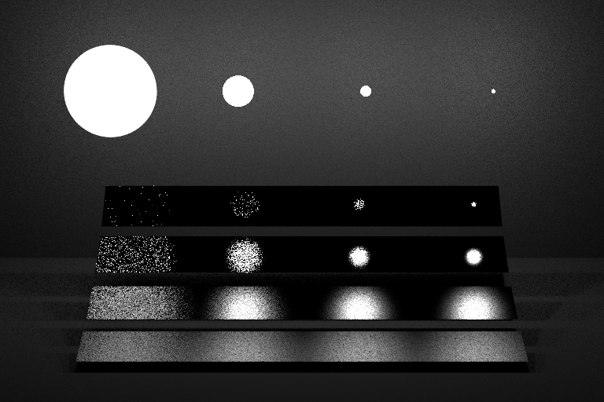
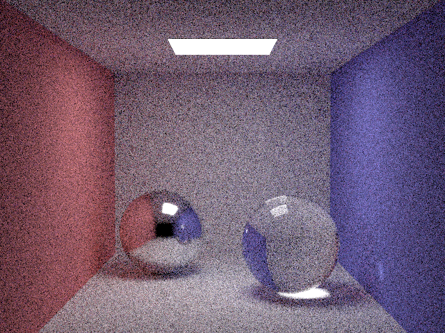

**Assignment 5**
Student name: XXXX
Netid: YYYY
(#) Task 1: Sampling Geometry
(#) Task 2: Making Lights Sampleable
(##) Rectangles
(##) Triangles
(##) Spheres
(##) Surface Groups
(#) Task 3: Integrating Lights
(##) Direct Lighting
(###) Odyssey scene
One quad
Two triangles
(###) Veach scene
Material Sampling Integrator
Next Event Integrator (light sampling)


